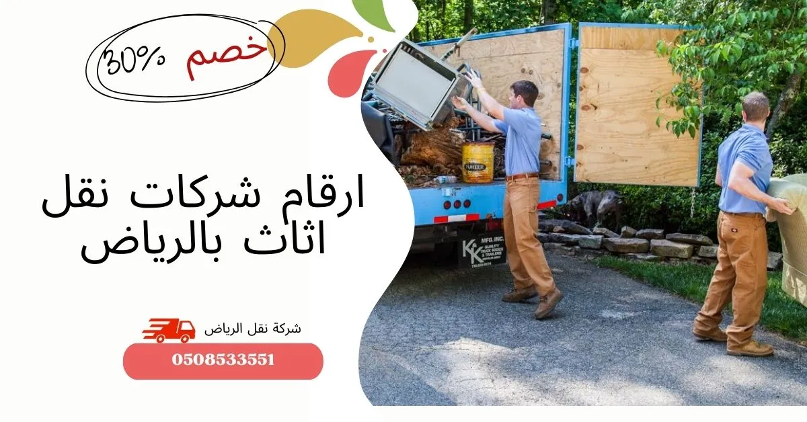

ارقام شركات نقل اثاث بالرياض

أصبح البحث عن ارقام شركات نقل اثاث بالرياض، أمر ضروري ومهم للأفراد الذين يخططون للانتقال من منزل إلى آخر أو تغيير مقر عملهم، حيث توفر هذه الشركات خدمات متكاملة تشمل التعبئة، التغليف، النقل، والتركيب، مما يضمن تجربة نقل سلسة وخالية من المتاعب، فـ عند التواصل مع شركة نقل موثوقة، يمكنك الاستفادة من فريق مدرب وأدوات حديثة للحفاظ على أثاثك بأمان تام خلال عملية النقل.
ارقام شركات نقل اثاث بالرياض
يعتبر التواصل مع ارقام شركات نقل اثاث بالرياض الخطوة الأولى لضمان عملية نقل آمنة ومنظمة، حيث تتيح الشركات المتخصصة فرقًا محترفة تتولى جميع المهام بدايًة من الفك، التغليف، ونقل الأثاث بطرق احترافية تحميه من التلف والخدوش، ولذلك عند البحث عن أرقام هذه الشركات يفضل اختيار الشركات التي تتمتع بتقييمات إيجابية وخبرة طويلة في السوق، حيث تقدم خدماتها بأسعار تنافسية وعروض مميزة، يعد التواصل المباشر مع الشركة يتيح الحصول على استشارة مجانية وجدولة مواعيد مناسبة، ما يسهل عملية النقل ويوفر الوقت والجهد.
افضل شركة نقل عفش بالرياض
تعد ارقام شركات نقل اثاث بالرياض من الخيارات المهمة التي يحتاجها العديد من السكان في المدينة، سواء كانوا في عملية انتقال إلى منزل جديد أو تغيير مكتب العمل، من بين هذه الشركات تتميز العديد منها بالكفاءة والاحترافية، ولكن تعد شركة نقل الرياض من أبرز الشركات في هذا المجال تقدم الشركة خدمات متكاملة بدءًا من فك وتركيب الأثاث، مرورًا بتغليفه باستخدام مواد عالية الجودة لضمان عدم تلفه وصولًا إلى نقله بشكل آمن إلى الوجهة الجديدة.
مميزات شركة نقل الرياض
- الاحترافية والخبرة: شركة “نقل الرياض” تتمتع بفريق عمل محترف ذو خبرة طويلة في هذا المجال.
- أسعار تنافسية: تقدم الشركة خدماتها بأسعار معقولة مقارنة بخدماتها ذات الجودة العالية.
- خدمات شاملة: تشمل خدماتها التعبئة والتغليف والنقل والتركيب.
- سلامة الأثاث: تضمن الشركة الحفاظ على أثاثك من التلف بفضل مواد التغليف المميزة.
ارخص شركة نقل اثاث بالرياض
عند البحث عن ارخص شركة نقل أثاث بالرياض تكون بأسعار معقولة تطلب ارقام شركات نقل اثاث بالرياض بسرعة، يتجه الكثير من الناس للبحث عن خدمة موثوقة ولكن بأسعار تتناسب مع ميزانيتهم، حيث تعد عملية نقل الأثاث من المهام التي تتطلب دقة عالية في التنفيذ، كما يمكن أن تتعرض قطع الأثاث للتلف أو الخدوش إن لم يتم النقل بشكل مناسب لذلك، من المهم أن تقوم الشركات بتقديم خدمات عالية الجودة ولكن بتكلفة معقولة، إحدى الشركات التي تتمتع بشعبية كبيرة في هذا المجال هي شركة نقل الرياض، التي تجمع بين توفير خدمة متكاملة ونقل آمن للأثاث بأسعار مناسبة لجميع الفئات.
كما تقدم شركة نقل الرياض خدمة النقل كـ ارخص شركة نقل عفش بالرياض مما يجعلها خيارًا مثاليًا للعديد من الأسر والأفراد في الرياض وجميع أنحاء المملكة مع توفير خدمات شاملة تشمل التعبئة، النقل، والتغليف الاحترافي، حيث تسعى لتقديم خدمة مميزة تلبي احتياجات عملائها دون التأثير على الميزانية المقررة، من خلال خبرتها الطويلة في هذا المجال، توفر الشركة الأمان التام للأثاث خلال عملية النقل.
أهمية اختيار شركة نقل أثاث بأسعار معقولة
- توفير التكاليف: يساعد اختيار شركة بأسعار معقولة في تقليل تكاليف عملية النقل دون التأثير على الجودة.
- تسهيل عملية الانتقال: من خلال خدمات متكاملة، تسهل الشركات على الأفراد عملية الانتقال إلى منازلهم أو أماكن عملهم بسهولة ودون عناء.
- حماية الأثاث: التعاقد مع شركة نقل محترفة يضمن الحفاظ على الأثاث أثناء عملية النقل، مما يقلل من الخسائر المترتبة على التلف أو الخدوش.
- الراحة والوقت: توفر الشركات المحترفة الوقت والجهد للعملاء، حيث يتم النقل بكفاءة وسرعة.
مميزات شركة نقل عفش خارج الرياض
تعتبر شركات نقل العفش خارج الرياض من الخيارات المثالية، التي تلبي احتياجات العملاء الذين يرغبون في الانتقال إلى مدن أخرى داخل المملكة، فهي تقدم خدمات متكاملة لضمان نقل الأثاث بشكل آمن وفعال، مع مراعاة الحفاظ على جميع الأغراض المنزلية من الأضرار، سواء كنت تخطط للانتقال إلى مدينة قريبة أو بعيدة، فإن ارقام شركات نقل اثاث بالرياض توفر لك حلولاً متنوعة ومناسبة لاحتياجاتك، مع الالتزام بالجودة والاحترافية في كل خطوة من خطوات النقل.
خدمات متكاملة
تقدم ارقام شركات نقل اثاث بالرياض خدمات شاملة تشمل التعبئة، التغليف، النقل، والتركيب، مما يسهل على العملاء جميع خطوات الانتقال من منزل إلى آخر، حيث يمكنك الاتصال بـ ارقام شركات نقل اثاث الرياض لتسهيل عملية النقل.
الخبرة والاحترافية
تتمتع شركة نقل الرياض بخبرة طويلة في مجال نقل العفش بين المدن، ما يضمن تنفيذ عملية النقل بكفاءة ودقة، مع ضمان عدم تعرض الأثاث لأي ضرر.
التقنيات الحديثة
تستخدم الشركات تقنيات متقدمة مثل عربات النقل المناسبة والأدوات الخاصة، بتغليف الأثاث لحمايته أثناء الرحلة الطويلة، ما يساهم في الحفاظ على الأثاث بحالة ممتازة.
أسعار تنافسية
تقدم العديد من الشركات أسعارًا تنافسية ومناسبة للجميع، مع توفير العروض والخصومات في افضل شركات نقل عفش بين المدن، مما يجعلها خيارًا مناسبًا لمن يرغبون في نقل أثاثهم بتكلفة معقولة.
خدمة عملاء متميزة
تقدم الشركات دعمًا فنيًا واستشارات قبل وأثناء عملية النقل، مما يعزز من رضا العملاء ويسهم في تسهيل تجربتهم.
التوصيل في الوقت المحدد
تلتزم الشركات بمواعيد محددة لضمان وصول الأثاث إلى المكان الجديد في الوقت المتفق عليه، مما يوفر للعملاء الراحة والطمأنينة.
كيف يتم نقل العفش شرق الرياض
يتطلب نقل العفش في شرق الرياض، اتخاذ عدة خطوات أساسية لضمان حماية الأثاث من الأضرار وتقديم خدمة احترافية وفعالة، حيث تبدأ العملية بالتخطيط المسبق من خلال تحديد موعد مناسب للنقل بعد ذلك، يقوم فريق العمل بتفكيك الأثاث بحذر باستخدام أدوات متخصصة للحفاظ على سلامته، كما يتم تغليف القطع باستخدام مواد حماية مثل الفقاعات البلاستيكية أو الأغطية المخصصة لحمايتها من الخدوش والتلف أثناء النقل.
كما يقوم فريق النقل لدينا باستخدام مركبات مجهزة بشكل جيد، مثل الشاحنات الصغيرة أو المتوسطة، وفقاً لحجم العفش المنقول، حيث يتم ترتيب الأثاث في الشاحنة بشكل منظم وآمن لضمان عدم تحركه أثناء الرحلة، بعد وصول العفش إلى وجهته في شرق الرياض يقوم الفريق بترتيب الأثاث في المكان الجديد، مع إعادة تجميع القطع الكبيرة مثل الأسرة والطاولات.
في النهاية، تهدف هذه العملية إلى توفير أقصى درجات الأمان والكفاءة، مما يضمن تجربة نقل سلسة للعملاء.
الأسئلة الشائعة حول ارقام شركات نقل اثاث بالرياض
ما هي أهم الخدمات التي تقدمها شركات نقل الأثاث؟
تقدم شركات نقل الأثاث خدمات شاملة تشمل فك وتركيب الأثاث، تغليفه بمواد خاصة، النقل باستخدام سيارات مجهزة، وإعادة التركيب في الوجهة الجديدة، مع ضمان الحماية من التلف والخدوش، بالإضافة إلى توفير العروض والخصومات التي يمكن أن تصل إلى 50%، ولمزيد من الاستفسارات يمكنك الاتصال بـ ارقام شركات نقل اثاث بالرياض.
كيف أختار أفضل شركة نقل أثاث في الرياض؟
عند اختيار شركة نقل أثاث، تأكد من مراجعة التقييمات عبر الإنترنت، التحقق من التراخيص القانونية، مقارنة الأسعار، والتأكد من وجود ضمان على الخدمات المقدمة لتأمين الأثاث أثناء عملية النقل.
في النهاية يعد العثور على ارقام شركات نقل اثاث بالرياض خطوة أساسية لضمان الانتقال بسهولة وأمان، حيث تضمن الشركات الموثوقة خدمات متكاملة تشمل التعبئة والنقل والتركيب بأسعار مناسبة مع توفير الدعم اللازم للعملاء، لذلك لا تتردد في التواصل مع الشركات المتخصصة التي تتمتع بسمعة جيدة وتقييمات إيجابية لتجربة نقل ناجحة دون متاعب، احرص دائمًا على الاستفسار عن الخدمات المقدمة والشروط لضمان اختيار الأفضل.